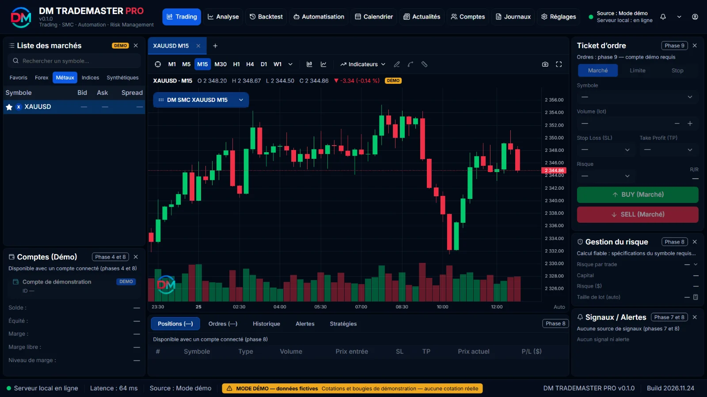
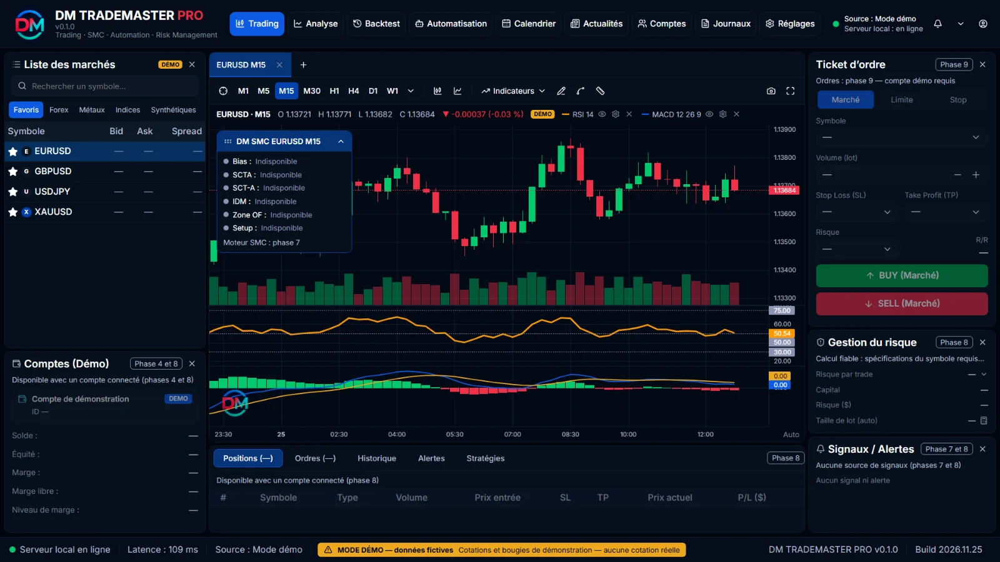
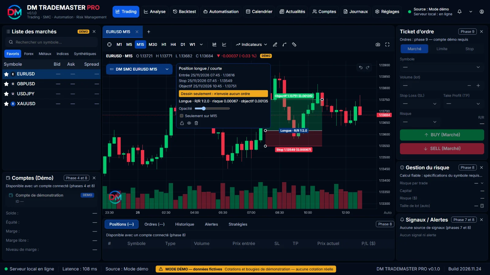

<!doctype html>
<html lang="fr" class="no-js">
<head>
  <meta charset="utf-8">
  <meta name="viewport" content="width=device-width, initial-scale=1">
  <title>DM TradeMaster Pro — logiciel d’analyse de trading pour Windows</title>
  <meta name="description" content="DM TradeMaster Pro : logiciel de trading pour Windows en développement, graphiques professionnels, outils de dessin, analyse Smart Money Concepts, gestion du risque. Aucun ordre sans confirmation. Android prévu.">
  <meta name="theme-color" content="#00050d">
  <meta name="color-scheme" content="dark">
  <meta property="og:type" content="website">
  <meta property="og:title" content="DM TradeMaster Pro">
  <meta property="og:description" content="Logiciel d’analyse de trading pour Windows, en développement. Graphiques professionnels, outils SMC, sécurité. Android prévu.">
  <link rel="canonical" href="https://kpekpassiabdelnazirandre-max.github.io/">
  <meta property="og:url" content="https://kpekpassiabdelnazirandre-max.github.io/">
  <meta property="og:image" content="https://kpekpassiabdelnazirandre-max.github.io/assets/img/og-image.png">
  <meta property="og:image:width" content="1200">
  <meta property="og:image:height" content="630">
  <meta property="og:locale" content="fr_FR">
  <meta property="og:locale:alternate" content="en_US">
  <meta name="twitter:card" content="summary_large_image">
  <meta name="twitter:image" content="https://kpekpassiabdelnazirandre-max.github.io/assets/img/og-image.png">
  <link rel="icon" href="assets/img/favicon-64.png" type="image/png">
  <link rel="apple-touch-icon" href="assets/img/apple-touch-icon.png">
  <link rel="preload" href="assets/fonts/inter-latin-400-normal.woff2" as="font" type="font/woff2" crossorigin>
  <link rel="preload" href="assets/fonts/inter-latin-800-normal.woff2" as="font" type="font/woff2" crossorigin>
  <link rel="stylesheet" href="assets/css/site.css">
  <script type="application/ld+json">
  {"@context":"https://schema.org","@type":"SoftwareApplication","name":"DM TradeMaster Pro","url":"https://kpekpassiabdelnazirandre-max.github.io/","applicationCategory":"FinanceApplication","operatingSystem":"Windows","softwareVersion":"0.1 (en développement)","author":{"@type":"Person","name":"Abdel Nazir André KPEKPASSI","address":{"@type":"PostalAddress","addressCountry":"BJ"}}}
  </script>
</head>
<body data-title-key="title.home">
  <a class="skip" href="#contenu" data-i18n="skip">Aller au contenu</a>

  <svg width="0" height="0" style="position:absolute" aria-hidden="true">
    <defs>
      <!-- Icônes DM maison : trait 2, à la couleur du texte, points d'ancrage. -->
      <symbol id="i-chart" viewBox="0 0 24 24" fill="none" stroke="currentColor" stroke-width="2" stroke-linecap="round" stroke-linejoin="round"><path d="M6 4v16M12 7v11M18 3v13"/><rect x="4" y="8" width="4" height="7" rx="1"/><rect x="10" y="10" width="4" height="5" rx="1"/><rect x="16" y="6" width="4" height="6" rx="1"/></symbol>
      <symbol id="i-draw" viewBox="0 0 24 24" fill="none" stroke="currentColor" stroke-width="2" stroke-linecap="round"><path d="M5 18 19 6"/><circle cx="5" cy="18" r="2.2"/><circle cx="19" cy="6" r="2.2"/><path d="M4 7h7" opacity=".55"/></symbol>
      <symbol id="i-smc" viewBox="0 0 24 24" fill="none" stroke="currentColor" stroke-width="2" stroke-linecap="round" stroke-linejoin="round"><path d="M3 17l4-5 3 3 5-7 3 3 3-4"/><path d="M3 8h9" stroke-dasharray="2 3"/><rect x="13" y="14" width="8" height="5" rx="1" opacity=".6"/></symbol>
      <symbol id="i-live" viewBox="0 0 24 24" fill="none" stroke="currentColor" stroke-width="2" stroke-linecap="round"><path d="M3 12h4l2-5 4 10 2-5h6"/></symbol>
      <symbol id="i-risk" viewBox="0 0 24 24" fill="none" stroke="currentColor" stroke-width="2" stroke-linecap="round"><circle cx="12" cy="12" r="8.5"/><circle cx="12" cy="12" r="4"/><path d="M12 3.5V7M12 17v3.5M3.5 12H7M17 12h3.5"/></symbol>
      <symbol id="i-sync" viewBox="0 0 24 24" fill="none" stroke="currentColor" stroke-width="2" stroke-linecap="round" stroke-linejoin="round"><rect x="2.5" y="5" width="11" height="8" rx="1.5"/><path d="M6 17h4"/><rect x="16" y="7" width="5.5" height="11" rx="1.2"/><path d="M8 20c3 1 7 1 9-1M16 3c-2-1-5-1-7 1" opacity=".6"/></symbol>
      <symbol id="i-code" viewBox="0 0 24 24" fill="none" stroke="currentColor" stroke-width="2" stroke-linecap="round" stroke-linejoin="round"><path d="M8 8 4 12l4 4M16 8l4 4-4 4M13.5 5l-3 14"/></symbol>
      <symbol id="i-shield" viewBox="0 0 24 24" fill="none" stroke="currentColor" stroke-width="2" stroke-linecap="round" stroke-linejoin="round"><path d="M12 3 5 6v5.5c0 4.2 2.9 7.7 7 9.5 4.1-1.8 7-5.3 7-9.5V6z"/><path d="m9 12 2 2 4-4"/></symbol>
      <symbol id="i-windows" viewBox="0 0 24 24" fill="none" stroke="currentColor" stroke-width="2" stroke-linejoin="round"><rect x="3" y="4" width="18" height="13" rx="1.8"/><path d="M8 21h8M12 17v4"/><path d="M7 13l3-3 2 2 4-4" stroke-linecap="round"/></symbol>
      <symbol id="i-phone" viewBox="0 0 24 24" fill="none" stroke="currentColor" stroke-width="2" stroke-linejoin="round"><rect x="6.5" y="2.5" width="11" height="19" rx="2.2"/><path d="M10.5 18.5h3" stroke-linecap="round"/><path d="M9 12l2-2 1.5 1.5L15 9" stroke-linecap="round"/></symbol>
      <symbol id="i-check" viewBox="0 0 24 24" fill="none" stroke="currentColor" stroke-width="2.2" stroke-linecap="round" stroke-linejoin="round"><circle cx="12" cy="12" r="9"/><path d="m8 12 3 3 5-6"/></symbol>
      <symbol id="i-alert" viewBox="0 0 24 24" fill="none" stroke="currentColor" stroke-width="2" stroke-linecap="round" stroke-linejoin="round"><path d="M12 3 2.5 20h19z"/><path d="M12 10v4.5M12 17.5h.01"/></symbol>
      <symbol id="i-arrow" viewBox="0 0 24 24" fill="none" stroke="currentColor" stroke-width="2" stroke-linecap="round" stroke-linejoin="round"><path d="M5 12h14M13 6l6 6-6 6"/></symbol>
      <symbol id="i-menu" viewBox="0 0 24 24" fill="none" stroke="currentColor" stroke-width="2" stroke-linecap="round"><path d="M4 7h16M4 12h16M4 17h16"/></symbol>
    </defs>
  </svg>

  <header class="site-header">
    <nav class="container nav" aria-label="Navigation principale" data-i18n-attr="aria-label:nav.label">
      <a class="brand" href="./" aria-label="DM TradeMaster Pro, accueil" data-i18n-attr="aria-label:brand.home">
        
        <span>DM TradeMaster <b>Pro</b></span>
      </a>
      <button class="menu-toggle" type="button" aria-expanded="false" aria-controls="menu" aria-label="Menu" data-i18n-attr="aria-label:nav.menu"><svg width="22" height="22"><use href="#i-menu"/></svg></button>
      <ul class="nav-links" id="menu">
        <li><a href="#fonctionnalites" data-i18n="nav.features">Fonctionnalités</a></li>
        <li><a href="#captures" data-i18n="nav.shots">Captures</a></li>
        <li><a href="#feuille-de-route" data-i18n="nav.roadmap">Feuille de route</a></li>
        <li><a href="#securite" data-i18n="nav.security">Sécurité</a></li>
        <li><a href="#faq" data-i18n="nav.faq">FAQ</a></li>
        <li class="lang-item"><div class="lang" role="group" aria-label="Langue" data-i18n-attr="aria-label:nav.lang">
          <button type="button" data-lang="fr" aria-pressed="true">FR</button>
          <button type="button" data-lang="en" aria-pressed="false">EN</button>
        </div></li>
      </ul>
    </nav>
  </header>

  <main id="contenu">
    <section class="hero">
      <div class="container hero-grid">
        <div>
          <p class="status-chip"><span class="dot" aria-hidden="true"></span><span data-i18n="hero.status">En développement · version 0.1 · pas encore distribué</span></p>
          <h1><span style="white-space:nowrap">DM TradeMaster</span> <span class="accent">Pro</span></h1>
          <p class="tagline" data-i18n="hero.tagline">Analyser avec précision. Décider avec méthode.</p>
          <p class="lead" data-i18n="hero.lead">Un logiciel de trading pour Windows, conçu autour de l’analyse Smart Money Concepts  graphiques professionnels, outils de dessin, gestion du risque et sécurité au premier plan. Android suivra.</p>
          <div class="hero-actions">
            <a class="btn btn-primary" href="#fonctionnalites"><span data-i18n="hero.discover">Découvrir</span><svg><use href="#i-arrow"/></svg></a>
            <a class="btn btn-ghost" href="#feuille-de-route" data-i18n="hero.roadmap">Feuille de route</a>
          </div>
          <p class="risk-banner" role="note"><svg><use href="#i-alert"/></svg><span data-i18n="hero.risk">Le trading comporte un risque élevé de perte en capital. DM TradeMaster Pro est un outil d’analyse  il ne promet aucun gain et ne passera jamais d’ordre sans votre confirmation.</span></p>
        </div>
        <div>
          <div class="hero-visual">
            <div class="chart-head"><strong>DM</strong><span data-i18n="hero.chart">Illustration · M15</span><span class="tag" data-i18n="hero.fictive">DONNÉES FICTIVES</span></div>
            <canvas id="hero-chart" role="img" aria-label="Illustration animée : bougies fictives et repères Smart Money Concepts (cassure de structure, zone d’ordres, liquidité)" data-i18n-attr="aria-label:hero.canvas"></canvas>
            
          </div>
          <p class="hero-caption" data-i18n="hero.caption">Animation décorative dessinée par ce site  bougies et repères SMC fictifs.</p>
        </div>
      </div>
    </section>

    <section id="fonctionnalites">
      <div class="container">
        <div class="section-head reveal">
          <span class="eyebrow" data-i18n="feat.eyebrow">Fonctionnalités</span>
          <h2 data-i18n="feat.title">Tout ce qu’il faut pour analyser, au même endroit</h2>
          <p data-i18n="feat.text">Chaque fonctionnalité indique son état réel  ce qui existe déjà dans le logiciel, ce qui est en cours et ce qui est prévu.</p>
        </div>
        <div class="features">
          <article class="card reveal"><div class="icon"><svg><use href="#i-chart"/></svg></div><h3 data-i18n="f1.t">Graphiques professionnels</h3><p data-i18n="f1.p">5 types (bougies, barres, ligne, aire, Heikin Ashi), 8 unités de temps de M1 à W1, 7 indicateurs réglables (SMA, EMA, Bollinger, RSI, MACD, ATR, stochastique), comparaison de symboles et capture du graphique.</p><span class="badge done" data-i18n="b.p3">Fait · phase 3</span></article>
          <article class="card reveal"><div class="icon"><svg><use href="#i-draw"/></svg></div><h3 data-i18n="f2.t">Outils de dessin</h3><p data-i18n="f2.p">Ligne de tendance, lignes horizontale et verticale, rectangle, position longue ou courte. Couleurs libres, styles, textes, unités affichées au choix  vos dessins sont enregistrés.</p><span class="badge done" data-i18n="b.p3">Fait · phase 3</span></article>
          <article class="card reveal"><div class="icon"><svg><use href="#i-live"/></svg></div><h3 data-i18n="f3.t">Données de marché en direct</h3><p data-i18n="f3.p">Prix en direct et historique depuis des sources officielles, en lecture seule  forex, métaux, indices, indices synthétiques et cryptomonnaies, avec la latence mesurée.</p><span class="badge progress" data-i18n="b.p4">En cours · phase 4</span></article>
          <article class="card reveal"><div class="icon"><svg><use href="#i-smc"/></svg></div><h3 data-i18n="f4.t">Analyse DM SMC</h3><p data-i18n="f4.p">Le panneau DM SMC réunira biais, structure, inducement, zones d’ordres et configurations, calculés par un moteur propre à DM.</p><span class="badge planned" data-i18n="b.p7">Prévu · phase 7</span></article>
          <article class="card reveal"><div class="icon"><svg><use href="#i-risk"/></svg></div><h3 data-i18n="f5.t">Gestion du risque</h3><p data-i18n="f5.p">Taille de position calculée selon le risque choisi, stop loss, take profit et rapport risque / rendement, à partir des données réelles du compte.</p><span class="badge planned" data-i18n="b.p8">Prévu · phase 8</span></article>
          <article class="card reveal"><div class="icon"><svg><use href="#i-sync"/></svg></div><h3 data-i18n="f6.t">Synchronisation PC ↔ Android</h3><p data-i18n="f6.p">Vos analyses et vos dessins vous suivent entre Windows et Android.</p><span class="badge planned" data-i18n="b.p6b">Prévu · phases 6B et 11</span></article>
          <article class="card reveal"><div class="icon"><svg><use href="#i-code"/></svg></div><h3 data-i18n="f7.t">Éditeur d’indicateurs Python</h3><p data-i18n="f7.p">Écrivez vos propres indicateurs en Python, directement dans le logiciel.</p><span class="badge planned" data-i18n="b.p12">Prévu · phase 12</span></article>
          <article class="card reveal"><div class="icon"><svg><use href="#i-shield"/></svg></div><h3 data-i18n="f8.t">Sécurité</h3><p data-i18n="f8.p">Identifiants rangés dans le coffre Windows, connexion aux courtiers par leurs pages officielles, serveur local protégé, et aucun ordre sans votre confirmation explicite.</p><span class="badge progress" data-i18n="b.p45">En cours · phases 4 et 5</span></article>
        </div>
      </div>
    </section>

    <section id="captures">
      <div class="container">
        <div class="section-head reveal">
          <span class="eyebrow" data-i18n="shots.eyebrow">Captures</span>
          <h2 data-i18n="shots.title">Le vrai logiciel, tel qu’il est aujourd’hui</h2>
          <p data-i18n="shots.text">Captures réelles de la version en développement, prises avec les données de démonstration  la mention DÉMO y reste visible.</p>
        </div>
        <div class="gallery">
          <figure class="window shot-main reveal">
            <div class="window-bar"><span></span><span></span><span></span><em>DM TradeMaster Pro — Trading</em></div>
            <picture>
              <source media="(max-width: 700px)" srcset="assets/img/ecran-trading-800.webp">
              
            </picture>
            <figcaption data-i18n="shot1.cap">Écran Trading, disposition DM Original (données de démonstration).</figcaption>
          </figure>
          <div class="shots">
            <figure class="window shot reveal"><a href="assets/img/indicateurs-1600.webp" target="_blank" rel="noopener"><picture><source media="(max-width: 700px)" srcset="assets/img/indicateurs-800.webp"></picture></a><figcaption data-i18n="shot2.cap">Indicateurs RSI et MACD sous le graphique.</figcaption></figure>
            <figure class="window shot reveal"><a href="assets/img/position-1600.webp" target="_blank" rel="noopener"><picture><source media="(max-width: 700px)" srcset="assets/img/position-800.webp"></picture></a><figcaption data-i18n="shot3.cap">Outil Position  objectif, stop et rapport risque / rendement.</figcaption></figure>
            <figure class="window shot reveal"><a href="assets/img/reglages-dessin-1600.webp" target="_blank" rel="noopener"><picture><source media="(max-width: 700px)" srcset="assets/img/reglages-dessin-800.webp"></picture></a><figcaption data-i18n="shot5.cap">Réglages d’un dessin  trait, couleurs, texte.</figcaption></figure>
            <figure class="window shot reveal"><a href="assets/img/comparaison-1600.webp" target="_blank" rel="noopener"><picture><source media="(max-width: 700px)" srcset="assets/img/comparaison-800.webp"></picture></a><figcaption data-i18n="shot6.cap">Comparaison de deux symboles, en pourcentage.</figcaption></figure>
          </div>
        </div>
        <p class="note" data-i18n="shots.note">L’interface peut encore évoluer d’ici la première version distribuée.</p>
      </div>
    </section>

    <section id="feuille-de-route">
      <div class="container">
        <div class="section-head reveal">
          <span class="eyebrow" data-i18n="road.eyebrow">Feuille de route</span>
          <h2 data-i18n="road.title">Treize phases, une à une</h2>
          <p data-i18n="road.text">Chaque phase est terminée seulement quand elle est prouvée par des tests et des captures réelles.</p>
        </div>
        <ol class="timeline">
          <li class="done reveal"><span class="node">1</span><div class="row"><div><h3 data-i18n="r1.t">Fondations</h3><p data-i18n="r1.p">Serveur local, API protégée, données de démonstration.</p></div><span class="badge done" data-i18n="s.done">Terminé</span></div></li>
          <li class="done reveal"><span class="node">2</span><div class="row"><div><h3 data-i18n="r2.t">Interface DM Original</h3><p data-i18n="r2.p">Disposition et identité visuelle de la maquette.</p></div><span class="badge done" data-i18n="s.done">Terminé</span></div></li>
          <li class="done reveal"><span class="node">3</span><div class="row"><div><h3 data-i18n="r3.t">Graphique professionnel</h3><p data-i18n="r3.p">Types de graphiques, indicateurs, dessins enregistrés, captures.</p></div><span class="badge done" data-i18n="s.done">Terminé</span></div></li>
          <li class="progress reveal"><span class="node">4</span><div class="row"><div><h3 data-i18n="r4.t">Données de marché réelles</h3><p data-i18n="r4.p">Prix en direct et historique, lecture seule, aucun ordre.</p></div><span class="badge progress" data-i18n="s.progress">En cours</span></div></li>
          <li class="reveal"><span class="node">5</span><div class="row"><div><h3 data-i18n="r5.t">Sécurité des identifiants</h3><p data-i18n="r5.p">Coffre Windows pour tous les identifiants.</p></div><span class="badge planned" data-i18n="s.planned">Prévu</span></div></li>
          <li class="reveal"><span class="node">6</span><div class="row"><div><h3 data-i18n="r6.t">Application de bureau Windows</h3><p data-i18n="r6.p">Le logiciel dans sa propre fenêtre.</p></div><span class="badge planned" data-i18n="s.planned">Prévu</span></div></li>
          <li class="reveal"><span class="node">6B</span><div class="row"><div><h3 data-i18n="r6b.t">Synchronisation</h3><p data-i18n="r6b.p">Analyses et dessins synchronisés entre vos appareils.</p></div><span class="badge planned" data-i18n="s.planned">Prévu</span></div></li>
          <li class="reveal"><span class="node">7</span><div class="row"><div><h3 data-i18n="r7.t">Indicateur DM SMC</h3><p data-i18n="r7.p">Le moteur d’analyse Smart Money Concepts de DM.</p></div><span class="badge planned" data-i18n="s.planned">Prévu</span></div></li>
          <li class="reveal"><span class="node">8</span><div class="row"><div><h3 data-i18n="r8.t">Comptes et gestion du risque</h3><p data-i18n="r8.p">Lecture de vos comptes, calcul de la taille de position.</p></div><span class="badge planned" data-i18n="s.planned">Prévu</span></div></li>
          <li class="reveal"><span class="node">9</span><div class="row"><div><h3 data-i18n="r9.t">Ordres et backtest</h3><p data-i18n="r9.p">Ordres toujours confirmés par vous, test de stratégies sur l’historique.</p></div><span class="badge planned" data-i18n="s.planned">Prévu</span></div></li>
          <li class="reveal"><span class="node">10</span><div class="row"><div><h3 data-i18n="r10.t">Distribution Windows</h3><p data-i18n="r10.p">Installateur pour Windows.</p></div><span class="badge planned" data-i18n="s.planned">Prévu</span></div></li>
          <li class="reveal"><span class="node">11</span><div class="row"><div><h3 data-i18n="r11.t">Application Android</h3><p data-i18n="r11.p">Synchronisée avec la version Windows.</p></div><span class="badge planned" data-i18n="s.planned">Prévu</span></div></li>
          <li class="reveal"><span class="node">12</span><div class="row"><div><h3 data-i18n="r12.t">Éditeur d’indicateurs</h3><p data-i18n="r12.p">Vos indicateurs personnels, écrits en Python.</p></div><span class="badge planned" data-i18n="s.planned">Prévu</span></div></li>
          <li class="reveal"><span class="node">13</span><div class="row"><div><h3 data-i18n="r13.t">Moteur graphique DM</h3><p data-i18n="r13.p">Un moteur de graphiques entièrement conçu par DM.</p></div><span class="badge planned" data-i18n="s.planned">Prévu</span></div></li>
        </ol>
      </div>
    </section>

    <section id="plateformes">
      <div class="container">
        <div class="section-head reveal">
          <span class="eyebrow" data-i18n="plat.eyebrow">Plateformes</span>
          <h2 data-i18n="plat.title">Windows d’abord, Android ensuite</h2>
        </div>
        <div class="two">
          <article class="card platform reveal"><div class="icon"><svg><use href="#i-windows"/></svg></div><div><h3>Windows</h3><p data-i18n="plat.win">Application de bureau pour Windows 10 et 11. En développement  aucune version n’est encore distribuée.</p><span class="badge progress" data-i18n="plat.winb">En développement</span></div></article>
          <article class="card platform reveal"><div class="icon"><svg><use href="#i-phone"/></svg></div><div><h3>Android</h3><p data-i18n="plat.and">Application mobile synchronisée avec la version Windows, après celle-ci.</p><span class="badge planned" data-i18n="plat.andb">Bientôt</span></div></article>
        </div>
      </div>
    </section>

    <section id="securite">
      <div class="container">
        <div class="section-head reveal">
          <span class="eyebrow" data-i18n="sec.eyebrow">Sécurité et confidentialité</span>
          <h2 data-i18n="sec.title">Vos décisions et vos données restent à vous</h2>
        </div>
        <ul class="principles">
          <li class="reveal"><svg><use href="#i-check"/></svg><div><strong data-i18n="p1.t">Aucun ordre sans vous</strong><span data-i18n="p1.p">Le logiciel ne passera jamais un ordre sans votre confirmation explicite. Aucun trading automatique.</span></div></li>
          <li class="reveal"><svg><use href="#i-check"/></svg><div><strong data-i18n="p2.t">Jamais votre mot de passe</strong><span data-i18n="p2.p">La connexion à un courtier se fait sur sa page officielle. DM TradeMaster Pro ne demande ni ne stocke votre mot de passe.</span></div></li>
          <li class="reveal"><svg><use href="#i-check"/></svg><div><strong data-i18n="p3.t">Coffre Windows</strong><span data-i18n="p3.p">Les identifiants d’accès sont rangés dans le coffre de Windows, jamais en clair dans un fichier ni dans un journal.</span></div></li>
          <li class="reveal"><svg><use href="#i-check"/></svg><div><strong data-i18n="p4.t">Serveur local protégé</strong><span data-i18n="p4.p">Le moteur du logiciel tourne sur votre ordinateur et n’accepte que les demandes de son interface.</span></div></li>
          <li class="reveal"><svg><use href="#i-check"/></svg><div><strong data-i18n="p5.t">Conditions des sources respectées</strong><span data-i18n="p5.p">Quand une source interdit de conserver ses prix, le logiciel ne les enregistre nulle part et bloque leur export.</span></div></li>
          <li class="reveal"><svg><use href="#i-check"/></svg><div><strong data-i18n="p6.t">Ni cookie ni traceur</strong><span data-i18n="p6.p">Ce site ne dépose aucun cookie, n’affiche aucune publicité et ne mesure pas l’audience.</span></div></li>
        </ul>
      </div>
    </section>

    <section id="faq">
      <div class="container">
        <div class="section-head reveal">
          <span class="eyebrow">FAQ</span>
          <h2 data-i18n="faq.title">Questions fréquentes</h2>
        </div>
        <div class="faq">
          <details class="reveal"><summary data-i18n="q1">Le logiciel est-il disponible </summary><p data-i18n="a1">Pas encore. DM TradeMaster Pro est en développement  aucune version n’est distribuée pour l’instant. Ce site sera mis à jour quand une première version sera prête.</p></details>
          <details class="reveal"><summary data-i18n="q2">DM TradeMaster Pro fait-il gagner de l’argent </summary><p data-i18n="a2">Non, et aucun logiciel ne peut le promettre. C’est un outil d’analyse et d’organisation. Le trading comporte un risque élevé de perte en capital  vos décisions restent les vôtres.</p></details>
          <details class="reveal"><summary data-i18n="q3">Le logiciel passe-t-il des ordres automatiquement </summary><p data-i18n="a3">Non. Les ordres arriveront dans une phase ultérieure, et chacun devra être confirmé par vous, explicitement.</p></details>
          <details class="reveal"><summary data-i18n="q4">Avec quels courtiers fonctionnera-t-il </summary><p data-i18n="a4">Les connexions passent par les interfaces officielles des plateformes, en lecture seule d’abord. La liste sera publiée quand chaque connexion sera prête et vérifiée.</p></details>
          <details class="reveal"><summary data-i18n="q5">Mes identifiants sont-ils en sécurité </summary><p data-i18n="a5">Vous vous connectez sur la page officielle de votre courtier  le logiciel ne voit pas votre mot de passe. Les accès qu’il reçoit sont rangés dans le coffre de Windows.</p></details>
          <details class="reveal"><summary data-i18n="q6">Une version Android est-elle prévue </summary><p data-i18n="a6">Oui, après la version Windows, avec la synchronisation de vos analyses entre les deux.</p></details>
          <details class="reveal"><summary data-i18n="q7">Combien coûtera le logiciel </summary><p data-i18n="a7">Aucun tarif n’est fixé pour l’instant.</p></details>
          <details class="reveal"><summary data-i18n="q8">Qui développe DM TradeMaster Pro </summary><p data-i18n="a8">Abdel Nazir André KPEKPASSI, développeur indépendant au Bénin.</p></details>
        </div>
      </div>
    </section>
  </main>

  <footer class="site-footer">
    <div class="container">
      <div class="footer-grid">
        <a class="brand" href="./"><span>DM TradeMaster <b>Pro</b></span></a>
        <ul class="footer-links">
          <li><a href="confidentialite.html" data-i18n="foot.privacy">Confidentialité</a></li>
          <li><a href="mentions-legales.html" data-i18n="foot.legal">Mentions légales</a></li>
          <li><a href="risques.html" data-i18n="foot.risk">Avertissement sur les risques</a></li>
        </ul>
      </div>
      <p class="footer-risk" data-i18n="foot.riskText">Le trading de produits à effet de levier (forex, CFD, indices synthétiques, cryptomonnaies) comporte un risque élevé de perte en capital et ne convient pas à tout le monde. Les informations de ce site ne sont pas des conseils en investissement.</p>
      <p class="footer-risk">© <span data-year>2026</span> Abdel Nazir André KPEKPASSI · <span data-i18n="foot.country">Bénin</span></p>
    </div>
  </footer>
  <script src="assets/js/i18n-en.js" defer></script>
  <script src="assets/js/site.js" defer></script>
</body>
</html>
